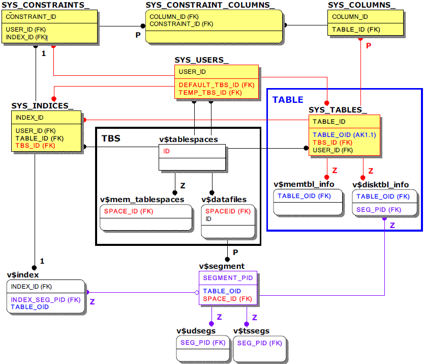

Altibase is able to check tablespace and table information according to the memory or disk (refer to TBS, TABLE box) due to the nature of hybrid DBMS. in the case of a segment, each performance view related to v$segment (purple) the user can check the detailed resource usage status through.
However, in the case of an index, as a meta table or performance view for measuring the memory index size is not currently provided, the total number of records in the table should be replaced by multiplying the memory index size for one record by 16 bytes.
For a disk index, refer to v$index, and real-time size can be measured through the corresponding segment.
The following shows the relationship between meta tables and performance views in which only key columns to refer to are used in join queries related to tablespaces, tables, columns, indexes, and constraints.

As a special feature, when joining between the main metatable SYS_TABLE_ and another metatable, TABLE_ID is used as the join column, and when joining with the performance view, the alternative key is the TABLE_OID column (blue).
Although not indicated for reference, all of the metatables except SYS_USERS_ and SYS_TABLES_ have both USER_ID and TABLE_ID columns for the convenience of the query. Performance view v$segment and v$index also have a table_OID column considering the sum of each table.
Main Meta Tables
SYS_COLUMNS_
As a meta table that stores column information for all tables, detailed information such as the column name (COLUMN_NAME), data type (DATA_TYPE), and column order (COLUMN_ORDER) can be checked.
SYS_CONSTRAINTS_
As a meta table that stores the constraint information of the table, the constraint type (CONSTRAINT_TYPE) can be checked, and in the case of constraints such as PK, FK, and UK, the index number (INDEX_ID) can be checked. Also, in the case of FK, a reference table (REFERENCED_TABLE_ID) can also be checked.
SYS_CONSTRAINT_COLUMNS
This is a meta table that can check the column number (COLUMN_ID) of the column that is the target of the constraint and is associated with the related constraint number (CONSTRAINT_ID).
SYS_INDICES_
As a meta table that stores all index information, detailed information such as index name (INDEX_NAME), table space number (TBS_ID), index type (INDEX_TYPE), and the number of constituent columns (COLUMN_CNT) can be checked.
Main Performance Views
v$tablespaces
This is a performance view that shows all tablespace information and is basically used when monitoring tablespace.
v$mem_tablspaces
This is a performance view that shows detailed information only about the memory tablespace. It is possible to find the physical memory size actually used to operate the memory DB.
v$datafiles
This is a performance view that shows detailed information of the data files that make up the disk tablespace. The user can check the path, status, and size of the physical data files.
v$segment
This is a performance view that shows segment information of a disk table. The user can obtain the exact size of disk DB-related objects such as disk tables, disk indexes, undo tablespaces, and temporary tablespaces.
v$memtbl_info
This is a performance view that shows detailed information only for the memory table, and the size and sum of pure data for each memory table can be obtained.
v$disktbl_info
With the performance view showing detailed information only for the disk table, the corresponding segment. (SEG_PID) can be known, so that the size and sum of pure data for each disk table can be obtained.
v$index
This is a performance view that shows brief information about all indexes. In the case of a disk index, the corresponding segment (INDEX_SG_PID) can be known to determine the size of the disk index.
{kind=link}